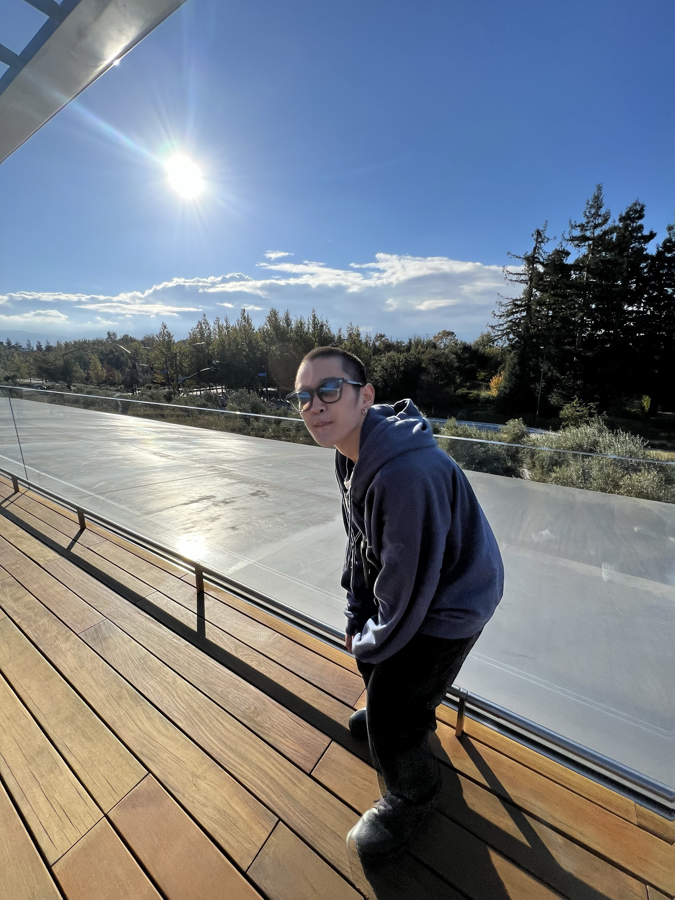

Profile

中村賢成
生年月日：２００５年３月２１日生まれ
血液型：Ｏ型
特技：ギター、ドラム、イラストなどの手先を使うもの
福井県出身、敦賀気比高校卒業。
高校在学中にバンド活動を市のイベントで行った際に運営スタッフもしていた。
その際、ずっと興味を持っていたウェブ制作を手伝わせていただき、そこから何度か市から依頼を受け本格的にウェブ制作を開始した。
高校３年生の夏には１人で初めて１つのサイトを作り上げ、イベント用のページとして使っていただいた。（現在は不具合により、閉鎖中。）
現在は、将来的に夢である“IT企業”と呼ばれる職種に着くために日々精進している。
趣味
-
趣味1: DTM作成
-
趣味2: 動画編集